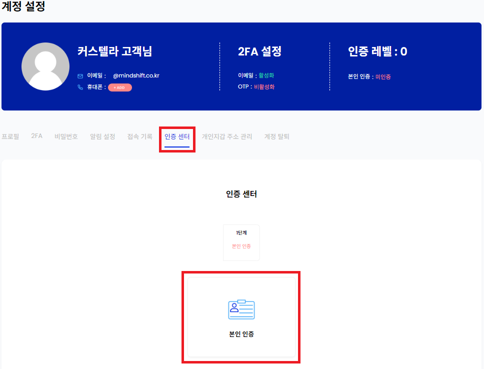

← 법적 문서 목록으로
고객확인제도 안내
주식회사 마인드시프트의 가상자산 사업자 신고 수리에 따른 고객확인제도를 시행합니다.
고객확인제도란?
고객확인제도란 특정금융거래정보의 보고 및 이용에 관한 법률(이하 '특정금융정보법') 제5조의2에 따라 마인드시프트에서 제공하는 가상자산 보관서비스가 자금세탁행위등에 사용되지 않도록 고객의 신원을 확인하고, 실제 소유자, 자금원천, 거래목적 등을 확인하는 등 합당한 주의를 기울이는 제도입니다.
고객확인을 이행하지 않은 고객은 서비스 이용이 제한됩니다.
💡 고객확인 수행절차 💡
1. 회원가입

2. 계정 관리 > 인증센터
'계정 관리'를 클릭합니다.

계정 설정 페이지에서 '인증센터' > '본인인증'을 클릭합니다.

본인인증 클릭">
3. 휴대폰 인증
휴대폰 본인 인증에 필요한 필수약관 동의 및 정보를 입력하여 인증을 완료해 주세요.

4. 신분증 인증
모바일로 전송된 링크를 클릭하여 신분증 인증을 완료해 주세요.
필수 준비물: 주민등록증 혹은 운전면허증, (외국인에 해당할 경우) 외국인등록증
5. 계좌 인증
본인명의 계좌정보를 이용하여 1원 인증을 완료해 주세요.

6. 필수 정보 입력
거주지, 직업, 직장, 거래목적, 자금원천 등 필수 정보를 입력해 주세요.
7. 완료
💡 자주 묻는 질문 💡
Q1. 자금세탁이란?
A. 자금세탁이란, 탈세 또는 불법재산을 적법한 자산인 것처럼 보이기 위한 목적으로 재산의 취득 및 처분 사실을 가장하거나 이러한 재산을 은닉하는 행위를 말합니다.
Q2. 고객확인을 반드시 해야하나요?
A. '특정금융정보법'에 따라 모든 고객에 대한 고객확인은 필수입니다. 고객확인이 이행되지 않을 시에는 서비스 이용이 불가합니다. 외국인도 동일하게 고객확인 절차를 준수해야 합니다.
Q3. 어떤 종류의 신분증을 이용할 수 있나요?
Q4. 고객확인은 한 번만 하면 되나요?
A. '자금세탁방지 및 공중협박자금조달 금지에 관한 업무 규정' 제 34조(지속적인 고객확인)에 의거하여 서비스를 이용하는 고객은 주기적으로 고객확인을 재이행 해야 합니다. 재이행 주기는 위험도에 따라 상이하며 재이행 주기 도달 30일 전에 이메일과 SMS를 통해 안내 드립니다.
Q5. 1원 계좌인증은 무엇인가요?
A. 고객 본인 명의로 발급된 계좌를 이용하여 인증 받는 방법으로, 1원이 송금된 입금자명 뒤에 붙는 숫자 4자리를 입력하여 인증하는 방식입니다.
- 고객 본인명의 은행 계좌로만 인증이 가능합니다.
- 가상계좌는 인증이 불가합니다.
Q6. 정보 변경시 고객확인을 다시 이행해야 하나요?
A. 국적, 직업구분변경 등 중요정보 변경 시 고객확인을 재이행 해야 합니다. 정해진 기간 내 미이행시에는 서비스 이용이 제한될 수 있습니다.
Q7. 여러 계정으로 인증이 가능한가요?
A. 본인명의의 1인 1계정으로만 인증이 가능합니다.
Q8. 서비스 이용이 불가할 수 있나요?
A. 특정금융정보법 제5조의 2 제4항에 따라 고객확인을 할 수 없거나 자금세탁방지 및 공중협박자금조달금지에 관한 업무규정 제 43조에 따라 요주의 인물로 해당하는 때에는 거래가 거절이 될 수 있습니다.